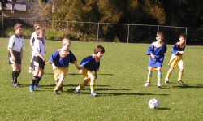
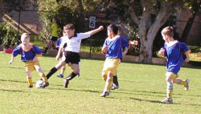
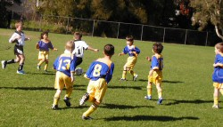
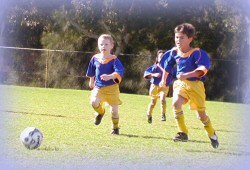

| Match Report - 07 June 2008 |
|
|
|
|
|
|
|
| U6 - White A |
North Ryde White Knights 2 - Ryde Saints United C 2

|
|
|
|
With the Sun gods shining down on us after a week of rain the kids were
eager to get on the field. With Saints United scoring first and second,
there was plenty of defending being done and all the kids were on the ball.
A great save by Riley who cleared the ball away
safely kept the score at 0-2. Some fancy footwork by
Hayden had the opposition baffled.
And then it was half-time. The oranges and watermelon went down a treat.
Some words of wisdom from the coach: 'Work together as a team. Clear the
ball down the sidelines and across into the goals. We can win this!'
And work together as a team they did! Daniel shoots
and scores with fantastic force. The score now 1-2. Come on team, you can do
it! A deflection by Caelan saves another opposition
goal. Then a tremendous sideline kick by Caelan
from past halfway straight into the middle allows
Darcy to finish off with a goal. The score now 2-2.
Some nice kicking from Jasmine makes it all look
too easy. Then Will B passes a stupendous ball
straight to Daniel who shoots - and just misses.
So close but yet so far!
The result - a well deserved draw. Great comeback kids. You all played with
enthusiasm and great determination.
- Carolyn
|
|
|
|
|
|


The weather was surprisingly good on Saturday. Luckily, our team was
able to play as the field was still open on Friday afternoon. 10:30
in the morning was a good starting time as the ground had managed to
dry up since the rain.
What a tight game! It was 0-0 in the first half and 1-1 in the second.
Even though it was a draw, we were proud of the effort the Green team
had made.
Their positioning and support have improved a lot. The Mighty Sam and
Super Hamish were outstanding and they deserved to be the Players of
the Week.


The Mighty Sam powered up for the ball and supported Rhea well. The
Super Hamish was full of energy and ran everywhere. He stopped the
opposition from any further attempts at goal. And we can't forget the
defenders Andrea, Satya and Ryan, who all passed the ball to each
other well.
The goal scored by Matthew was excellent and went right through the
goalkeeper. We need more of these. Rhea and Mitchell keep going with
your shots at goal.
Goalies Mitchell and Liam defended their goals well. Other than that,
we missed Jerry, Thomas, Oscar and Kyran on the day.
Good game! We love it!
- Mandy Van
|
|
|
| U10 - Division 1 |
|
Sat 7 June: North Ryde 2 - Hills Hawks 7

A very, very long drive to Arcadia on the outskirts of Sydney. The weather
turned for the better but the field was slightly soggy in patches. It didn't
take long for the yellow shorts to turn a light colour of brown! As if the
trip wasn't long enough, yours truly discovered 10 minutes into the journey
that the players' ID cards were left at home, so back to retrieve. Added to
this there were roadworks and an unintentional visit to Vision Valley
Conference Centre. We arrived only 14 minutes prior to the game.
HWK were exceptionally strong and lightening fast in the forward and midfield
line and had greater possession of the ball with a 5-nil result at half time.
You can well imagine Jared (gk) had his work cut out for him. The score could
have been higher for HWK if it wasn't for the skill Jared mustered. Prior to
half-time, Frazer broke free from HWK and lofted a kick at goal which skimmed
the top of the cross bar and went out and unfortunately missed a fine
opportunity. Bad luck, Frazer a lesson learnt!
Like the two matches prior, NRS seem to pull their socks up with some gutsy
determination in the second half with improved performance. The second half
produced 2 goals apiece, certainly a more even contest. NRS penetrated HWK's
defence and made several attempts at goal. Ryan took the free kick awarded
to NRS and scored the first goal. Alex scored the second goal where the ball
trickled in slow motion into the goal.
Although 7-2, NRS defence put in a good effort (Emile, William, Josh, and
James & Lachlan) and the player of the match was awarded to James. A number
of NRS players were spotted at McDonalds on the long trip home. We face HWK
once again on Monday, let's hope we can reduce the goal differential.
- Lesley Campbell (Manager)
|
|
Mon 9 June: North Ryde 1 - Hills Hawks 6
The wet weather returned. Plodge! Surely, Napisan sales have gone up over
the weekend. A greater number of supporters turned up, being a Monday holiday.
During the warm-up, Jared (GK) injured his hand and we had to make a last
minute substitution in goal with Ben. Although a 6 - 1 result, NRS did have
greater possession of the ball compared to the Saturday game against HWK.
As it turned out, Jared had a short stint in goal in the second half. After
saving a goal with three very quick successive attempts by HWK, Jared further
injured his hand and sat out the remainder of the game, again replaced by Ben.
NRS made numerous attempts on goal. The one successful goal was a result of
a pass from Ryan to Isaac and then to Frazer. Frazer was wrapped as he proudly
achieved his mission to score in revenge for the goal he missed at the previous
game. Tom was on fire with a couple of attempts at trying to turn the score
around but unfortunately missed. At one stage we saw Lachlan pass the ball to
Tom between the legs of a HWK's player. Ben successfully prevented no less
than 6 goal attempts by HWK, many of them were well struck. Ben was awarded
the player of the match. All in all, an improved team performance against a
formidable opponent.
- Lesley Campbell (Manager)
|
|
|
| U12 - Division 3 |
|
Sat 7 June: North Ryde Nitros 2 - Thornleigh 0

There had been days of rain leading up to our Saturday match against
Thornleigh. Were we playing? But at last the sun shone, it was damp underfoot
and the game was on! The ground was very heavy. The dampness making the ball
somewhat sluggish. North Ryde & Thornleigh were fairly evenly matched. We
were only 10 minutes into the game and we scored! The pass went between Lewis
& Luke to Zac with smiles all round!
We dominated in possession in the first quarter. Lewis was solid in defence.
We only had to wait another 10 minutes at the 20 minute mark when Zac sent
us into a 2-0 lead. Luke & Arman did some spectacular runs. Half time and
we remained at 2-0.
Second half and Thornleigh are hungry! They dominate but there are some close
calls. We breathed a sigh of relief when our two great defence backs,
Christopher & Lewis with their big boot kicks constantly send the ball back
to the other end of the field. Thornleigh were also strong in defence and
attack with 3 female players who were very dynamic!
James & Cameron showed good control of the ball in the damp conditions. Kyle
& Hayden, Ben, Elia, Nathan & Tom were consistent in play as always! Our
consistently dynamic Goalie, Lachlan, ensured that Thornleigh remained with
no points right up until full time. We won, the final score 2-0! We have a one
day break before we meet Thornleigh again on the holiday Monday, but this time
on their home turf! Look out for Rata's report on that match.
- Robin Butterfield
|
|
Mon 9 June: North Ryde Nitros 1 - Thornleigh 0
What a wet weekend the long weekend was! But the rain held off long enough
for the boys to enjoy another thrilling muddy game of soccer on Monday
against Thornleigh.
First half highlights
North Ryde kicked off and the play was evenly matched. Hayden did some great
clearing kicks, Chris 'the rock' kept the ball in Thornleigh's half, Lewis
and Tom worked hard to turn the ball around and Lachie was brilliant in goal
(and mud!). Thornleigh kept the pressure on but 10 mins in Elia scored a
thrilling goal, and Chris, Cameron and Luke almost sneaked another one in!
The whistle blew for half time just as NR were setting up for one more goal!
Second half highlights
Kyle kicked a massive kick forward and our trusty forwards Arman, Luke and
Cameron followed it through almost to the goals. At this point Coach Uhrig
declared 'Bodies on the line boys', which was to become the quote of the day!
With 15 minutes to go, the sun came out, the excitement was building,
breakaways were increasing, Elia had two great runs, the parents were
screaming and there was another attempt at goal!
With 10 minutes to go, Thornleigh broke away, had a shot at our goal, parents
and players alike held their breath... and luckily the ball sailed over our
goal posts and everyone could breathe again! It was still 1-0.
With 6 minutes to go, North Ryde had another stab at goal, with all our boys
playing well and keeping the pressure on Thornleigh. Manager Quan declares
it a 'close game'! Nathan 'the wall' and Tom were working hard near the
sidelines, Lewis saved a goal attempt by Thornleigh, and the whole team were
on fire.
In our final exciting attempt at a goal, Cam booted the ball only to see it
bounce off the goal posts! The whistle blew and it was a 1-0 victory for
North Ryde against a very evenly matched Thornleigh - a very thrilling game
of soccer! This game placed us first in the competition table, and a great
photo of the boys, including mud, made
Pic of the Week!
- Rata Rosenfels
|
|
|
|
|
|
What a courageous effort by the team on Saturday! After a lethargic start
and conceding 2 early goals, the team rolled up their sleeves and proceeded
to play some enterprising soccer and were unlucky not to pull 1 goal back
before halftime when a cracking shot from John P beat the goalie only to
cannon into the crossbar. But this was a sign of things to come.
In an exciting game of soccer both sides created several scoring chances.
West Ryde breakaways were only shut down with some outstanding defence by
Sam B and Liam T who were both tenacious in all they did, often turning
defence into attack. They were more than ably assisted by all the other
backs Tim B, Matt U and Tyler R. William G was called on to make no less
than 7 definite saves and his improved reading of the game with a new-found
willingness to attack the ball in several one-on-one situations made a
difference to the overall result.
The second half belonged to the boys who played some fine attacking team
football resulting in goals to Lewis B who took his chances when offered
and this was followed up by a cracking volley from a deflected clearance
to Sam B who was probably the player of the day for his all round efforts.
The side was unlucky not to score 3 further goals in the second half with
John P shooting wide on 2 occasions and Stephen B H on another.
There was not a bad performance on the day with Dana B, Jordan C, Jake R and
Victor T all playing strongly. The great thing to come out of this game was
the amazing courage and character shown by the team to rally and overcome a
poor start to the game and then go within an ace of pulling off a great win.
A special mention to stand-in coach for the day David Burn who ran the team
and made the tactical changes necessary to achieve the result. (The plan
worked Dave!)
Thank goodness there are no more Byes as they certainly don't agree with the
boys.
Once again well done to everyone on a gutsy effort!
- Bill Greer
|